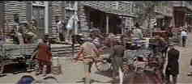

A Western is a Western is a Western
Page 6
Comancheros, The/ B-, A-
US/19961/Color/Widescreen 2.3:1/Stereo/107 minutes/Directed by Michael Curtiz/Starring
John Wayne, Stuart Whitman, Ina Balin/Fox Video/44 Chaps/Theatrical
Trailer/CLV/$59.98
There is a pervasive exuberance that propels The Comancheros beyond the
limitations imposed by minimal plotting. John Wayne's typical late career
screen image, a tough veneer leavened by a feisty sarcastic humor, effectively dominates
the screen. Wayne's Texas Ranger Jake Cutter is an appealing character and the actor
balances his macho posturing well with an underlying streak of sentiment. Stuart Whitman
clearly functions as support to Wayne in the role of Monsieur Paul Regret, a New
Orleans 
dandy on the run from injustice. He works well with appealing Ina Balin in a dubiously
constructed romance that serves to link together the chain of narrative.
Spells between the action drag somewhat, but the settings are
colorful. Sequences that take place in the Comanchero stronghold are well done, but those
moments involving the Texas Rangers fall flat. Lee Marvin is fun as an
distinctively coifed gun runner, yet the scenes between he and Wayne are
overdone.
While the widescreen scenes are well filmed, they are not extraordinary. The
music by Elmer Bernstein is outstanding, however, and significantly enhances the overall
impact of the film. Though the film is entertaining, there is a sense that
individual aspects of the film add up to a sum greater than the whole.
The disc production is a special collector's edition that features audio commentary on the
left analog track from a quartet of the films actors, Whitman, Patrick Wayne, Nehemiah
Persoff and Michael Ansara. There comments are not scene specific and take the form mostly
of career anecdotes. Whitman claims that Wayne virtually took over direction from Curtiz
about halfway through the film. Some of his observations are interesting, such as the fact
that during the filming of The Longest Day the actors had to suck on ice cubes to prevent
their breath from showing during the Winter filming of scenes depicting Summer. Michael
Ansara's droning reminiscences are quite boring. A sampling of production stills, lobby
cards and posters round out the extras on the disc.
Fox has made a handsome production of The Comancheros. The transfer has been accomplished
in fine fashion. Widescreen images are in sharp focus and the colorful setting has been
rendered in accurate tones. There is no undue evidence of video artifacts and the pressing
is very clean. The soundtrack is presented crisply.
|